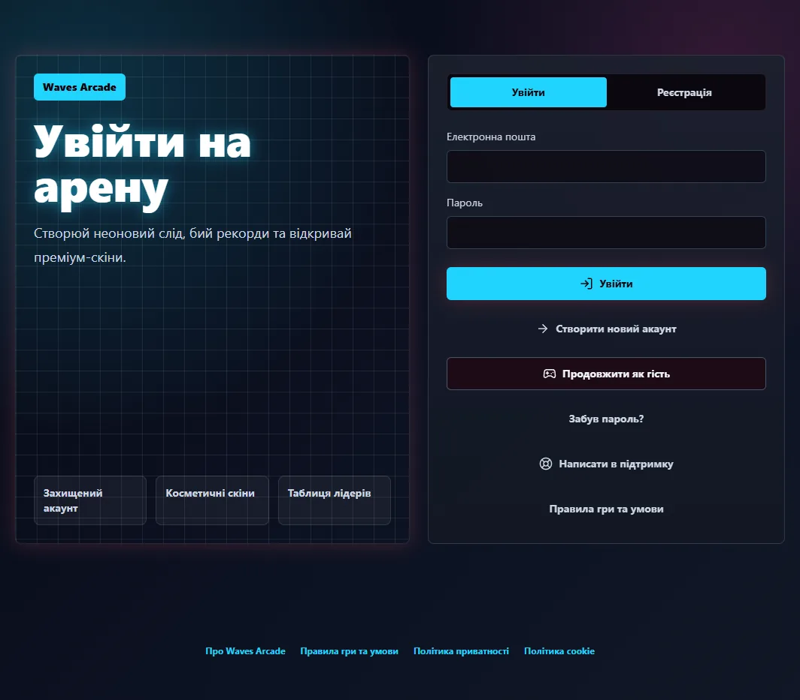
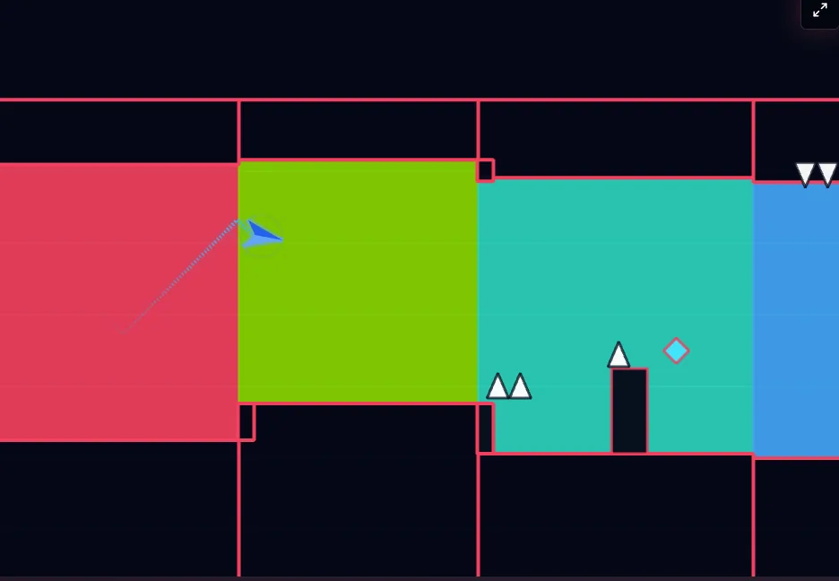
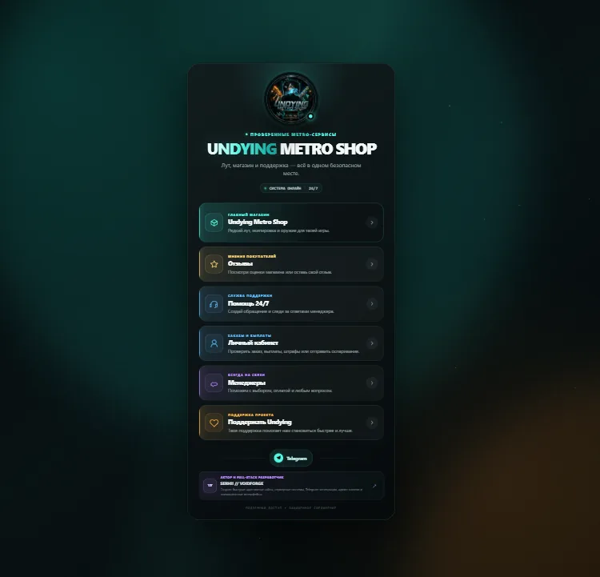
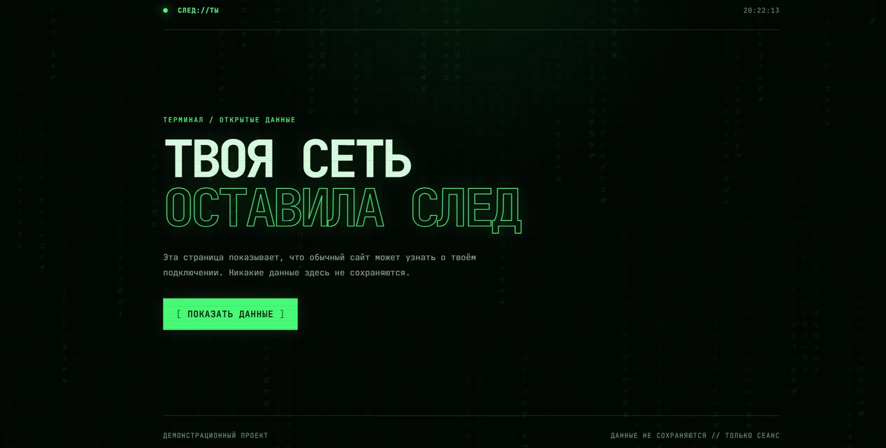
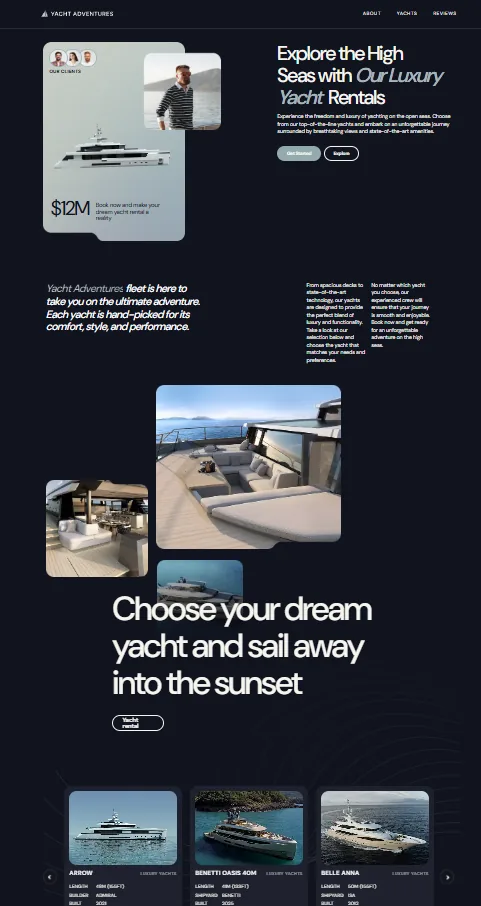
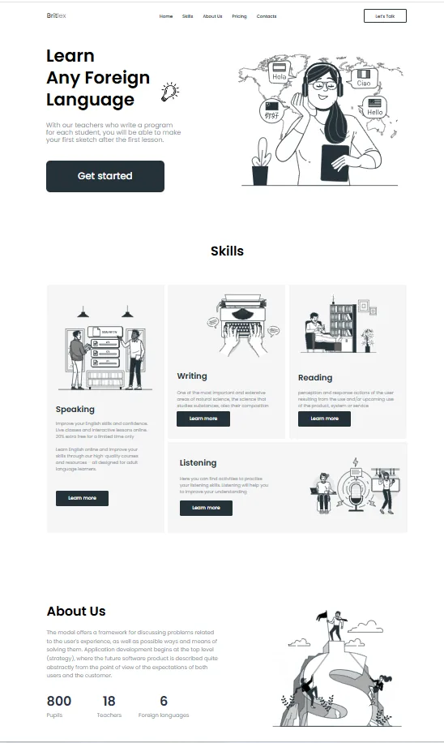

Frontend
Responsive, accessible interfaces built with clean component architecture and close attention to performance.
- React
- TypeScript
- JavaScript
- HTML5
- CSS3
- Tailwind CSS
- Vite
Frontend & Full Stack JavaScript Developer · Netherlands
Modern interfaces, practical backend systems, and clean JavaScript architecture—built to solve real problems with performance and detail in mind.
I’m Serhii, a JavaScript developer in the Netherlands who enjoys building complete web applications.
My focus is modern frontend development, clean code, responsive interfaces, and full-stack JavaScript. I like taking a real problem from idea to working product—designing the UI, connecting APIs, structuring the backend, and making the final experience fast and reliable. I keep learning, refining my process, and paying attention to the details users actually feel.
Solve the real problem first.
Keep the code clear and maintainable.
Make every screen responsive and fast.
Responsive, accessible interfaces built with clean component architecture and close attention to performance.
Complete JavaScript backends with secure authentication, structured data, and practical REST APIs.
A focused workflow for designing, building, versioning, and deploying modern web applications.
A full-stack browser game with user accounts, progression systems, leaderboards, admin tools, and secure backend validation.
The project combines an arcade gameplay experience with a complete account system, progression mechanics, analytics, and practical administration tools.
Designing secure server-side score validation and anti-cheat checkpoints while keeping gameplay responsive.


A modern gaming shop interface focused on premium UI/UX, a responsive layout, clear navigation, and fast performance.
Premium UI · Responsive · Fast
Real projectAn interactive web application that reveals browser, operating system, device, and IP-related information through a modern animated interface.
Browser data · Device insights · Motion
Real projectA responsive yacht rental website created as a team project, with an editorial layout, clear content hierarchy, and polished visual presentation.
Team delivery · Editorial UI · Responsive
Real projectA responsive language-learning landing page created as a team project, with accessible structure, clear service sections, and consistent visual rhythm.
Team delivery · Content hierarchy · Responsive
Real projectSuccessfully completed the Frontend (HTML/CSS) course and built graduation projects including an informational website and an e-commerce website.
International English edition issued by GoITeens Academy.Successfully completed the Frontend (HTML/CSS) course and built graduation projects including an informational website and an e-commerce website.
Original Ukrainian edition with the same verified course details.My GitHub is the working record behind these projects: frontend experiments, backend architecture, steady iteration, and practical problem-solving.
@SerhiiKharyponcukI’m open to frontend and full-stack JavaScript opportunities, collaborations, and projects where clean implementation matters.
kharyponchuksergej@gmail.com